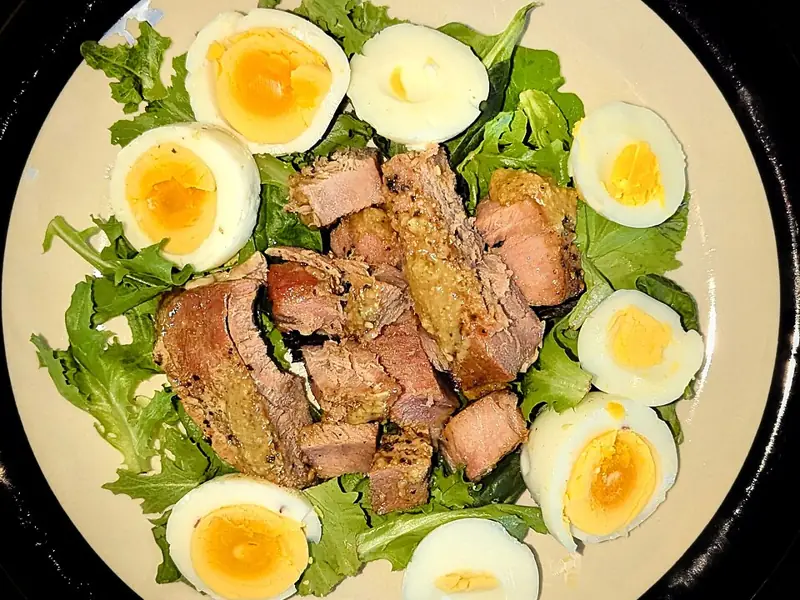

Фото: Daderot, CC0

Салат с тунцом и яйцом
Консервированный тунец с варёными яйцами, огурцом и листьями салата
20 мин3 порц.258 ккал на порциюБ 23 · Ж 17 · У 4Интернациональная кухня
Продукты на 3 порц.
- Тунец консервированный1 шт
- Яйцо куриное3 шт
- Огурцы1 шт
- Помидоры1 шт
- Салат листовой100 г
- Зелёный лук15 г
- Оливковое масло2 ст. л.
- Лимон1 ст. л.
- Соль1 щеп.
- Перец чёрный молотыйпо вкусу
- Вода1000 мл
Как готовить
- Сварите яйца вкрутую: 10 минут после закипания, затем остудите в холодной воде и очистите.
- Слейте жидкость с тунца и разберите его вилкой на крупные кусочки.
- Порвите листья салата руками, огурец нарежьте полукружьями, помидор дольками.
- Яйца разрежьте на четвертинки, зелёный лук порубите.
- Смешайте масло, лимонный сок, соль и перец.
- Выложите на блюдо листья, овощи, тунец и яйца, полейте заправкой и посыпьте луком.
Совет. Тунец в собственном соку легче, чем в масле. Для сытного варианта добавьте полбанки консервированной фасоли.